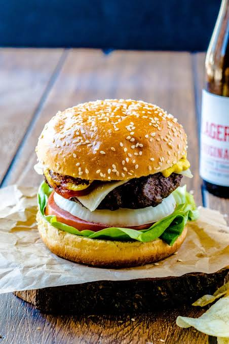

← Back to Home
Classic Burger

Description:
A juicy, perfectly seasoned beef patty topped with melted cheddar cheese,
crisp lettuce, ripe tomatoes, and special sauce, all sandwiched in a toasted brioche bun.
The ultimate backyard classic!
Ingredients:
- 1 lb ground beef (80/20 lean)
- 4 brioche burger buns
- 4 slices cheddar cheese
- 1 large tomato (sliced)
- 1 cup crisp lettuce leaves
- 1 small red onion (sliced)
- 2 tbsp butter (for toasting buns)
- Salt and black pepper to taste
- ¼ cup mayonnaise or burger sauce
Steps:
- Form the patties: Divide the ground beef into 4 equal portions and gently shape them into patties slightly wider than your buns. Season both sides with salt and pepper.
- Cook the burgers: Heat a skillet or grill over medium-high heat. Cook the patties for 3–4 minutes per side, placing a slice of cheddar cheese on each during the last minute to melt.
- Toast the buns: Lightly butter the inside of the burger buns and toast them face-down in the skillet until golden brown.
- Assemble: Spread your sauce on the bottom bun, add lettuce, the cheesy burger patty, tomato, red onion, and top with the upper bun. Serve immediately!